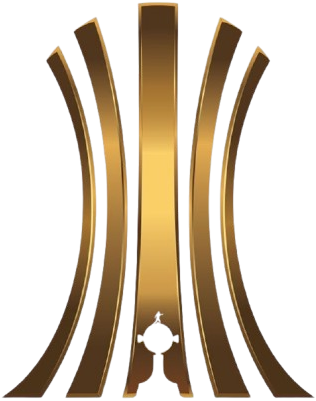
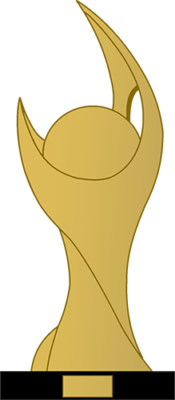

Sociedade Esportiva Palmeiras
Sociedade Esportiva Palmeiras, conhecida popularmente como Palmeiras, é um clube poliesportivo brasileiro da cidade de São Paulo, capital do estado homônimo. Foi fundado em 26 de agosto de 1914 e suas cores, presentes no escudo e bandeira oficial, são o verde e branco. O vermelho, presente desde sua fundação em 1914, foi excluído durante a Segunda Guerra Mundial, por pressão do governo de Getúlio Vargas, na mesma reunião que formalizou a mudança de nome de Palestra Italia para Palmeiras.
Tem como modalidade esportiva principal o futebol, como um dos clubes mais vencedores e de maior relevância em todo o continente, além de estar entre aqueles com maior torcida do país. Seus títulos mais importantes conquistados no futebol são as Copas Libertadores da América de 1999, 2020 e de 2021, e a Copa Rio (internacional) de 1951, considerado na época como um mundial de clubes de futebol e reconhecido como tal pela FIFA, por meio do presidente da entidade, Joseph Blatter, em agosto de 2014, sendo uma decisão do Comitê Executivo da FIFA de 7 de junho e por meio de documento encaminhado ao Ministério do Esporte do Brasil em novembro do mesmo ano. A entidade, no entanto, não reconhece a competição como um torneio FIFA e reforçou este posicionamento em outubro de 2017, quando reconheceu os vencedores da Copa Intercontinental como campeões mundiais, sem, também, promover a unificação da Copa Intercontinental com a sua competição anual até 2024, a partir de 2025, o quadrienal Mundial de Clubes FIFA passou a ser a principal competição de clubes da entidade. No âmbito internacional, o clube também conquistou a Copa Mercosul de 1998 e a Recopa Sul-Americana de 2022.
História
Início do século XX
A História da Sociedade Esportiva Palmeiras começa no dia 26 de agosto de 1914, quando o clube foi fundado por imigrantes italianos na cidade de São Paulo com o nome de Palestra Italia. A primeira partida da equipe foi disputada em 24 de janeiro de 1915 contra o Savoia, do atual município de Votorantim, à época distrito de Sorocaba, no interior paulista, e contou com a vitória palestrina por 2 a 0, com gols de Bianco e Alegretti.
Depois de colecionar nas décadas de 20 e 30 do século XX uma série de títulos paulistas e conquistar uma quantidade relevante de torcedores, o clube foi obrigado a mudar seu nome para Sociedade Esportiva Palmeiras em 1942, por ocasião da Segunda Guerra Mundial, já que o Brasil, governado pelo então presidente Getúlio Vargas, declarou guerra aos países do "Eixo" (Alemanha, Itália e Japão) e se alinhou aos países "Aliados", (Estados Unidos, União Soviética, Reino Unido, França, e outros).
Segunda metade do século XX
Na virada da primeira para a segunda metade do século, o alviverde atingiu um grande momento, conquistando seu primeiro e um dos mais importantes títulos internacionais. O clube paulistano venceu a Juventus, da Itália, no Estádio do Maracanã, para um público de mais de 100 mil pessoas, na final da Copa Rio de 1951, competição que foi reconhecida posteriormente pela FIFA com um Mundial de Clubes. Entre 1958 e 1970, nos "anos de ouro" do futebol brasileiro, quando o País conquistou seus três primeiros títulos mundiais de futebol e encantou o planeta, o Palmeiras era um dos poucos times que conseguiam ser páreo para o Santos de Pelé, considerado um dos maiores times do mundo em todos os tempos.
Durante essas décadas de ouro do futebol brasileiro, por conta da técnica apurada e pelo toque de bola refinado de seus jogadores, o Palmeiras foi comparado durante anos a uma "Academia de Futebol", que teve entre os principais protagonistas, em duas fases distintas e consecutivas, grandes nomes do futebol, como Ademir da Guia, Dudu, Julinho Botelho, Djalma Santos, Servílio, Tupãzinho, Luís Pereira, Leivinha, César e Leão. Coincidentemente, após o maior ícone da Academia, o meia Ademir da Guia, encerrar a carreira em 1977, o Palmeiras ficou durante um longo período sem conquistar títulos. Conhecido como "Divino" por conta da grande classe no trato da bola e pela eficiência, Ademir é considerado o maior jogador da história do alviverde, com a impressionante marca de 901 jogos disputados, 153 gols marcados e dezenas de títulos conquistados, entre campeonatos oficiais e torneios amistosos nacionais e internacionais.
O jejum de títulos entre 1976 e 1993 foi o mais longo da história do clube e exigiu paciência da torcida, que viu seus maiores rivais dominarem as conquistas da década de 1980. O martírio alviverde foi sepultado depois que a diretoria idealizou uma inédita parceria para a gestão do futebol com a empresa multinacional de origem italiana Parmalat. Tal acordo, possibilitou a contratação de grandes jogadores e técnicos competentes, que recolocaram o Palmeiras na trilha das conquistas.
Século XXI
Depois do novo período de alegria, que além de títulos contou com duas eliminações históricas do Corinthians na Copa Libertadores da América, e já com o término da parceira com a Parmalat, a torcida alviverde conviveu com a enorme tristeza do rebaixamento no Campeonato Brasileiro de 2002. Numa demonstração de paixão e fidelidade, apoiou o Palmeiras na conquista da Série B de 2003. A primeira década do século XXI foi um período de tentativas de reestruturação política e administrativa para o clube, que voltou a levantar um título de primeira divisão somente em 2008, quando conquistou o Campeonato Paulista.
Em 2012, ano no qual o ídolo Marcos encerrou a carreira, o Palmeiras voltou a levantar um título nacional após 12 anos. Comandada novamente por Luiz Felipe Scolari, a equipe alviverde conquistou a Copa do Brasil de 2012, de forma invicta, depois de levar a melhor contra o Coritiba na final da competição. No mesmo ano que ratificou a marca de maior campeão nacional da história, o alviverde amargou um novo rebaixamento para a Série B do Campeonato Brasileiro, depois de uma campanha marcada por uma série de contusões de jogadores, mau planejamento, elenco limitado e uma administração bastante questionada de seu presidente Arnaldo Tirone.
No ano seguinte, já sob a administração do presidente Paulo Nobre e com uma campanha com clara superioridade da equipe ante as demais, o Palmeiras subiu novamente à primeira divisão com 6 rodadas de antecedência, garantindo a participação na Série A de 2014, ano de seu centenário, quando escapou por pouco de um novo rebaixamento e quando teve a inauguração de sua nova arena como grande motivo de festa. Em 2015, quando a nova Arena teve seu primeiro ano completo de existência, o local foi palco de vários jogos com recorde de público e renda e fechou o ano com a conquista palmeirense do tricampeonato da Copa do Brasil, disputa que teve o goleiro Fernando Prass como grande herói. Em 2016, sob o comando do técnico Cuca e com jogadores decisivos, como Dudu, Gabriel Jesus, Moisés e Zé Roberto, o alviverde confirmou seu retorno às conquistas de grande porte e chegou ao seu nono título do Campeonato Brasileiro, depois de liderar 26 das 38 rodadas da competição e realizar a segunda melhor campanha da história dos pontos corridos até aquela temporada. Após obter o vice-campeonato em 2017, o Palmeiras obteve o décimo título da competição em 2018, com mais marcas históricas, como a maior invencibilidade e o melhor turno da história da era do Brasileirão de pontos corridos até então, tendo como destaques os jogadores Dudu, Willian e Bruno Henrique, sob o comando novamente de Felipão.
Na temporada de 2020, em meio à pandemia de COVID-19, o Palmeiras conquistou o bicampeonato da Copa Libertadores da América, com uma equipe comandada pelo técnico português Abel Ferreira e com jogadores decisivos, como Weverton, Gustavo Gómez, Viña, Raphael Veiga, Rony e Luiz Adriano, além de revelações vindas da base, como os jogadores Gabriel Menino, Danilo e Patrick de Paula. Após a competição de 2020 ter sido atrasada em virtude da doença que atingiu o planeta, a fase semifinal e a final foram disputadas em janeiro do ano seguinte. A equipe eliminou o favorito River Plate nas semifinais e, na decisão em jogo único, disputada no Estádio do Maracanã, derrotou o Santos, sagrando-se campeã com a melhor campanha da competição. O segundo título do Palmeiras na Libertadores veio 21 anos após a conquista de 1999. Além da conquista da Libertadores, a temporada marcou a tríplice coroa alviverde, já que ainda foram conquistados os títulos do Campeonato Paulista e da Copa do Brasil, quando o clube chegou ao tetracampeonato.
Símbolos
Escudo
Desde os primeiros jogos disputados, a letra "P" sempre esteve presente nos escudos dos uniformes do Palmeiras. Em 1915, na primeira partida do então Palestra Italia, as letras “P” e “I”, em forma arcaica, nas cores brancas, ornavam o escudo que se situava no lado esquerdo do uniforme dos jogadores. Em 1916, para a disputa do Campeonato Paulista daquele ano, a diretoria do clube decidiu importar da Itália um jogo de camisas com o escudo da Cruz de Savóia. Em 1917, a Cruz de Savoia deu lugar às letras “P” e “I”, que eram abrigadas por um triângulo na cor verde. Em 1918, o formato do distintivo passou a ser circular e com um fundo na cor branca, com as letras "P" em verde e "I" em vermelho. Em 1938, mudou-se apenas a disposição das cores: fundo verde e as letras "P" na cor branca e "I" em vermelho.
Em 1940, nova mudança somente nas cores: fundo verde e as letras "P" e "I" na cor vermelha. Em 1942, com a mudança do nome da equipe para Palmeiras, o vermelho e a letra “I” do escudo desapareceram, ficando apenas o verde e o branco, com a letra "P" no centro. Em 1959, o tradicional “P” diminuiu de tamanho e foram inseridas oito estrelas em volta do escudo, em referência ao mês de fundação do clube (agosto) e ao número de títulos paulistas conquistados pela equipe ainda como Palestra Italia. Elas foram acompanhadas do nome Palmeiras. Esta foi a última mudança relevante no distintivo alviverde, que permanece com o mesmo conceito até os dias de hoje.
Em fevereiro de 2012, o Departamento de Marketing do clube decidiu promover pequenas modificações no escudo, com a finalidade de padronizá-lo nas diferentes publicações usadas pela mídia. A nova versão, trouxe letras arredondadas no nome do Palmeiras e alterações no escudo suíço (que fica no interior do símbolo), como a ampliação das linhas e leve modificação na tradicional letra "P".
Uniformes
Os uniformes da Sociedade Esportiva Palmeiras compreendem as vestimentas adotadas pelos futebolistas do time paulista desde a sua fundação, em 1914, quando a agremiação foi denominada Palestra Itália. Ao longo de sua história, os uniformes da equipe passaram por diversas modificações, mas as cores principais, o verde e o branco, sempre foram preservadas. O vermelho, presente desde sua fundação, foi excluído durante a Segunda Guerra Mundial, por pressão do governo nacional, na mesma reunião que formalizou a mudança de nome de Palestra Itália para Palmeiras, em 1942.
Mascote
Os mascotes oficiais são o periquito verde e o porco. De acordo com o site oficial, o periquito foi escolhido desde a fundação do time por causa da comum coloração verde, do periquito e do clube, e também, por esse passarinho existir em abundância onde o clube está localizado, no bairro da Pompeia. Uma curiosidade: o periquito, apesar de alguns confundirem, nada tem a ver com o personagem da Disney Zé Carioca, que é um papagaio. O palmeirense é bem mais antigo e foi desenhado em São Paulo.
O "porco" surgiu, na verdade, como provocação e gozação das torcidas adversárias, já que o termo era uma forma pejorativa, desde a Segunda Guerra Mundial, como a elite paulistana se referia aos italianos e descendentes que moravam em São Paulo. O termo pejorativo foi adotado em 1969 pela torcida do rival Corinthians. Dois jogadores do time alvinegro morreram em um acidente de carro naquele ano e o Corinthians precisava inscrever novos atletas no Campeonato Paulista. Pelo regulamento, a equipe precisava do aval unânime dos outros clubes participantes, mas dirigentes palmeirenses acabaram vetando a filiação dos adversários e ficaram com a fama de ser "espírito de porco". No clássico seguinte entre os dois times, torcedores rivais chegaram a soltar um porco em campo e começaram a chamar o alviverde com o termo pejorativo.
Títulos
| Ícone | Competição | Títulos | Temporadas |
|---|---|---|---|
| Internacionais | |||
| Copa Rio Internacional | 1 | 1951 | |
| Continentais | |||
|  | Copa Libertadores da América | 3 | 1999, 2020 e 2021 |
|  | Copa Mercosul | 1 | 1998 |
| Recopa Sul-Americana | 1 | 2022 | |
| Nacionais | |||
| Campeonato Brasileiro | 12 | 1960, 1967(1), 1967(2), 1969, 1972, 1973, 1993, 1994, 2016, 2018, 2022 e 2023 | |
| Copa do Brasil | 4 | 1998, 2012, 2015 e 2020 | |
| Supercopa Rei | 1 | 2023 | |
| Estaduais | |||
| Campeonato Paulista | 26 | 1920, 1926, 1927, 1932, 1933, 1934, 1936, 1940, 1942, 1944, 1947, 1950, 1959, 1963, 1966, 1972, 1974, 1976, 1993, 1994, 1996, 2008, 2020, 2022, 2023 e 2024 | |